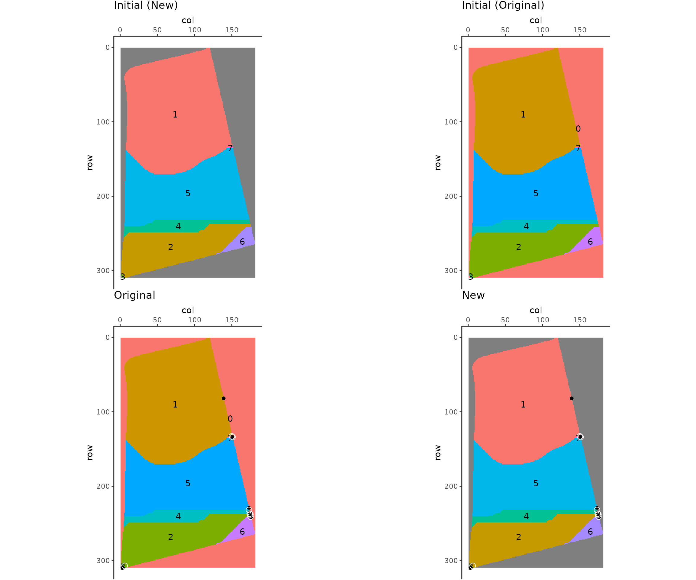

Test Flow - BR3 (MaxArea = 100; MaxDepth = 0.1)
Steffi LaZerte
2021-12-02
Source:vignettes/reports/BR3_compare_report_flow.Rmd
BR3_compare_report_flow.RmdDetails
- 0.61 min to run
- /home/steffi/Projects/Business/LandmapR/Runs - FlowMapR/BR3 original FlowMapR output
Visual Comparison of Sheds
Original vs. New Local Shed assignment
- The first shed shows initial pits which are removed in the first step of pit removal (This doesn’t exist in the original program)
- The next two are the local sheds (shedno) after amalgamating the small ones
- Black dots are pit centres (final centres for Orig, local centres for New)
- White outlines are Fill Pour Points for the local watersheds
## Warning: Removed 1 rows containing missing values (geom_text).
## Warning: Removed 1 rows containing missing values (geom_text).## Warning: Removed 15561 rows containing missing values (geom_point).
Original vs. New Fill Shed assignment
- These are the fill sheds, which reflect how sheds combined during the third pit removal process
- Black dots are pit centres, white dots are Fill Pour Points for the final watersheds
- Shapes should be identical to pond filling, just the numbers may be different
## Warning: Removed 1 rows containing missing values (geom_text).## Warning: Removed 15561 rows containing missing values (geom_point).Numeric Comparison


Compare pond stats
Original Pond data
New Pond data
Differences
- Each figure represents a different Pond measurement plotted by watershed
- Blue represents original values, pink new values. If they are identical, pink is hidden by blue
## Warning: Removed 50 rows containing missing values (geom_point).
Compare fill stats
Original Fill data
New Fill data
Differences
- Each figure represents a different Fill measurement plotted by watershed
- Blue represents original values, pink new values. If they are identical, pink is hidden by blue
## Warning: Removed 60 rows containing missing values (geom_point).

Inverted DEM
- Black dots indicate pits, or, as this is inverted, peaks
- White dots indicate flow points
## Warning: Removed 1 rows containing missing values (geom_text).
## Warning: Removed 1 rows containing missing values (geom_text).## Warning: Removed 15561 rows containing missing values (geom_point).
Compare values
- Each figure represents a watershed measurement


Original Inverted Pit data
New Inverted Pit data
Differences
- Each figure represents a different Inverted Pit measurement plotted by watershed
- Blue represents original values, pink new values. If they are identical, pink is hidden by blue
## Warning: Removed 49 rows containing missing values (geom_point).